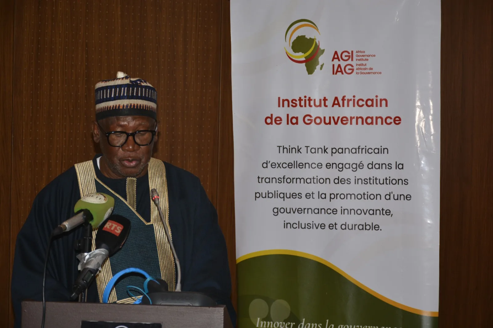
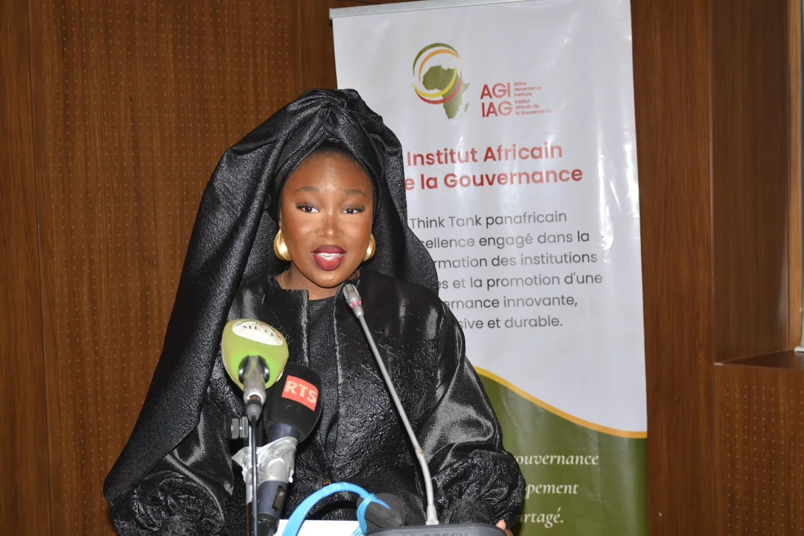
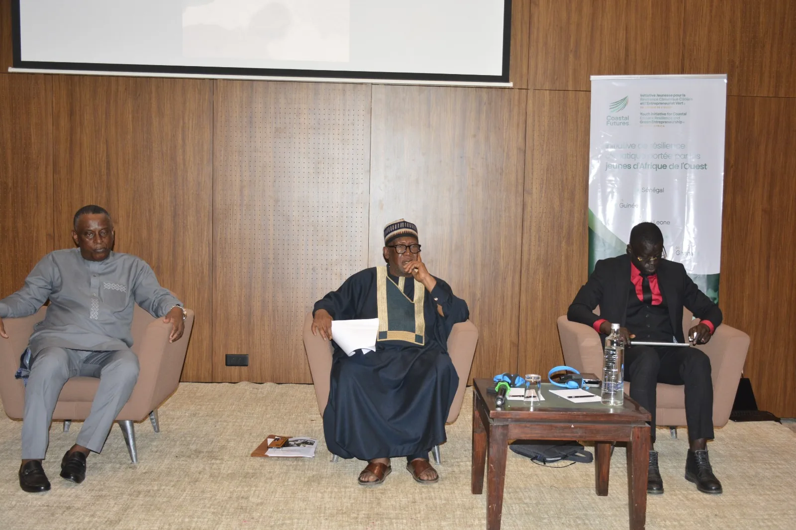

La journée de lancement de l'initiative Coastal Futures, tenue le 10 juin 2026 à Dakar sous l'égide de la Journée Mondiale de l'Environnement, a marqué le passage officiel du programme du stade de la conception à celui de l'engagement collectif. Organisée par l'Institut Africain de la Gouvernance à l'Hôtel Terrou-Bi, la cérémonie a réuni délégations officielles, partenaires techniques et financiers, représentants diplomatiques et entrepreneurs autour d'une feuille de route commune pour la résilience côtière et l'entrepreneuriat vert.
La journée s'est articulée autour d'une cérémonie d'ouverture à haute portée symbolique, d'une tribune jeunesse, d'une conférence inaugurale, de deux panels thématiques, d'un parcours entrepreneurs verts et d'une clôture officielle intitulée « L'Appel de Dakar ».
La boussole de la journée
En Afrique de l'Ouest, le défi n'est pas un déficit de financement, mais un déficit de capacités opérationnelles. Cette analyse, posée par le Directeur Général de l'IAG, a guidé l'ensemble des travaux.
Les perspectives dégagées dessinent une feuille de route 2026-2027 articulée autour de trois axes : l'ancrage institutionnel dans les cinq pays d'intervention, la connexion effective aux mécanismes de financement climatique international, et le passage à l'échelle des initiatives entrepreneuriales locales déjà opérationnelles sur le terrain.
Pourquoi Coastal Futures
L'Afrique de l'Ouest figure parmi les régions du monde les plus exposées aux effets du changement climatique, particulièrement dans ses zones côtières. Selon le sixième rapport d'évaluation du GIEC, le niveau moyen des océans pourrait augmenter de 0,44 à près d'un mètre d'ici 2100 selon les scénarios d'émissions. Les mesures satellitaires indiquent que l'Atlantique centre-est, englobant le golfe de Guinée et les eaux au large du Sénégal et du Ghana, enregistre une élévation du niveau marin de 3,90 mm par an, l'une des plus fortes du continent.
La dépendance à l'économie côtière est encore plus marquée à l'échelle nationale : au Sénégal, une personne active sur cinq travaille dans l'industrie de la pêche ; en Sierra Leone, le secteur halieutique fournit 80 % des apports en protéines animales ; au Ghana, ce secteur emploie directement ou indirectement 2,6 millions de personnes ; en Guinée-Conakry, la pêche artisanale constitue le premier moyen de subsistance pour près de 200 000 personnes.
C'est dans ce contexte que l'IAG a conçu Coastal Futures : une initiative régionale de résilience climatique côtière et d'entrepreneuriat vert pour la jeunesse ouest-africaine, couvrant le Sénégal, la Guinée-Conakry, la Sierra Leone, le Liberia et le Ghana. L'architecture combine formation, incubation entrepreneuriale, solutions fondées sur la nature et plaidoyer politique, en positionnant la jeunesse côtière comme actrice centrale de la résilience régionale et non comme simple bénéficiaire de l'aide.
Organisée sous le patronage de la Journée Mondiale de l'Environnement avec le soutien institutionnel du Ministère de l'Environnement et de la Transition Écologique, la cérémonie poursuivait quatre objectifs : l'ancrage juridique du programme, la convergence des acteurs publics, privés et de la société civile autour de la feuille de route, le plaidoyer international pour amplifier la voix africaine, et la création d'un dialogue direct entre investisseurs, bailleurs climatiques et jeunes entrepreneurs.
Une ouverture à portée politique
La journée s'est ouverte dans une atmosphère soignée, portée dès l'accueil par les sonorités de la Kora, un choix symbolique qui a installé d'emblée le cadre culturel et identitaire dans lequel Coastal Futures entend inscrire son action. La projection d'un manifeste vidéo a constitué le premier acte fort d'une journée pensée comme un moment de bascule.

Dr. Cheikh Tidiane Gadio a ouvert les travaux avec une intervention qui a immédiatement positionné la journée à une autre hauteur. Refusant la logique du retrait, qu'il qualifie de luxe que l'Afrique ne peut se permettre, il s'est présenté comme porte-voix des combats de la jeunesse. Convoquant Cheikh Anta Diop pour rappeler que l'Afrique est le berceau de la civilisation, il a frappé par ses chiffres : 600 millions d'Africains sans accès à l'électricité, 200 millions exposés à la famine. Son appel : un leadership africain structurel, fédérateur, ancré dans la mémoire continentale.
L'Honorable député M. Ousmane Ciss a ancré son allocution dans la réalité géographique et économique du littoral, documentant l'augmentation de près de deux degrés de la température au Sénégal et déroulant les cas de Bargny, Saly et Saint-Louis comme autant de symptômes d'un même mal traversant les cinq pays du programme. Son appel a été direct : la jeunesse est la solution, et l'entrepreneuriat vert en est le vecteur privilégié.
Le Dr Abdoulie Janneh, Directeur Général et Président du Conseil d'Administration de l'IAG, a clôturé la séquence d'ouverture avec un discours qui a fait office de boussole pour l'ensemble de la journée.
Le problème en Afrique de l'Ouest n'est pas un problème de financement, mais de capacités opérationnelles. Dr Abdoulie Janneh, DG et PCA de l'IAG
Cette formulation a replacé Coastal Futures dans sa dimension systémique : une initiative qui ne se contente pas de former des jeunes, mais qui les positionne comme acteurs économiques à part entière de la lutte contre le changement climatique.
Les voix du littoral
Avant l'ouverture des panels, la parole a été donnée aux premières personnes concernées : les jeunes et les femmes des communautés côtières. Un témoignage vidéo depuis Bargny a posé l'humain au centre des débats, illustrant le quotidien d'habitants confrontés à l'avancée de la mer, à l'émigration clandestine comme horizon par défaut, et aux effets structurels du changement climatique sur leurs moyens de subsistance.

Fanta Camara, Head of Climate and Youth Cluster de l'IAG, a rappelé que 100 millions de personnes vivent au niveau des côtes ouest-africaines, une population jeune, exposée, mais dont le potentiel de transformation reste largement sous-exploité. Elle a présenté le Climate Innovation Hub comme le dispositif central d'accompagnement, « un cadre concret pour les jeunes porteurs de projets verts et bleus, de l'idée à la mise en œuvre ». Son message : les jeunes ne sont pas témoins du changement climatique, ils en sont les acteurs.
Mme Diouma Diouf, Directrice de la Comptabilité et Coordinatrice de l'Équipe Projet Finance Durable au Crédit Mutuel du Sénégal, a introduit les travaux des panels. Pour elle, le changement climatique n'est plus une projection : il affecte déjà les économies, les territoires et les populations. Le talent et l'innovation, a-t-elle posé, ne suffisent pas sans financement, sans partenariats solides entre acteurs publics et privés, et sans cadre réglementaire structuré. L'entrepreneuriat vert n'est pas une option parmi d'autres, c'est une stratégie de développement à part entière, capable d'absorber les flux de jeunes qui arrivent chaque année sur un marché du travail saturé.
Deux panels, une conviction
Le premier panel, « L'entrepreneuriat vert, solution au chômage des jeunes et levier de résilience climatique en Afrique de l'Ouest », modéré par Mme Saran Kaba Wagué, a réuni quatre intervenants aux profils complémentaires : Mme Yacine Sarr (AgroTrip), M. Steven Moussa (entrepreneur social et agriculteur), M. Makhoudia Ndiaye (Bureau International du Travail) et M. René Édouard Mendis (Social Change Factory).

M. René Édouard Mendis a plaidé pour un véritable changement de paradigme : les jeunes ne doivent plus être considérés uniquement comme des bénéficiaires des politiques publiques, mais comme des acteurs à part entière des solutions climatiques. M. Steven Moussa a abordé le suivi des financements, citant le cas de populations côtières de Sindou relogées après l'avancée de la mer, dont certaines ont préféré vendre leurs parcelles et retourner en zone à risque, faute d'accompagnement social.
Mme Yacine Sarr a détaillé les obstacles rencontrés par les jeunes entrepreneurs verts : faible valorisation des métiers verts dans le système éducatif, formations trop théoriques, obstacles socioculturels pesant sur les femmes, difficultés d'accès au financement et concurrence des produits importés. M. Makhoudia Ndiaye a rappelé que l'Accord de Paris reste un cadre de référence central et que l'entrepreneuriat vert représente une opportunité réelle de création d'emplois durables, à condition de renforcer le dialogue social, la protection des travailleurs et les chaînes de valeur de l'économie verte.
Une conviction forte a émergé des échanges : la priorité n'est pas d'attendre un grand plan de financement, mais de créer dès maintenant un cadre réglementaire adapté, d'investir dans la sensibilisation et de donner aux jeunes les outils pour s'insérer dans la transition verte. Le parcours entrepreneurs verts l'a illustré avec Bio Tito, portée par Mbengue Ndiaye, étudiante à l'Université de Bambey : face à la dégradation de près de 60 % des terres agricoles sénégalaises, l'initiative valorise les huîtres côtières en fertilisant liquide, une alternative naturelle aux intrants chimiques.
Le second panel, « Des côtes fragilisées aux marchés durables », également modéré par Mme Saran Kaba Wagué, a réuni Mme Hind Aissaoui Bennani (Organisation Internationale pour les Migrations), M. Aziz Diedhiou (Banque Agricole du Sénégal) et Mme Habsatou Ndiaye (BSB Bio).

Mme Hind Aissaoui Bennani a situé l'entrepreneuriat vert dans la dynamique des migrations climatiques, décrivant en Sierra Leone des infrastructures scolaires partiellement englouties par la montée des eaux. Selon la Banque mondiale, plusieurs dizaines de millions de personnes pourraient être contraintes de se déplacer à l'intérieur de leur pays d'ici 2050. Mme Habsatou Ndiaye a présenté l'expérience de BSB Bio dans la valorisation du Typha australis, plante invasive du bassin du fleuve Sénégal transformée par des groupements de femmes en matériaux de construction et combustibles : « une contrainte environnementale peut devenir une opportunité économique ; une ressource négligée peut devenir une source de dignité. »
M. Aziz Diedhiou a mis en avant le potentiel sous-valorisé des filières agricoles, forestières et marines, notamment dans le Saloum, et plaidé pour le renforcement des capacités entrepreneuriales féminines. Son intervention a confirmé l'existence de lignes de financement actives au sein de la Banque Agricole du Sénégal, notamment en partenariat avec l'Agence Française de Développement, et annoncé qu'un nouveau mécanisme impliquant le Fonds Vert pour le Climat était en voie de finalisation.
La clôture : l'Appel de Dakar
Le mot de clôture du PCA de l'IAG a délibérément rompu avec les conventions du discours institutionnel. Choisissant une posture sobre, non discursive, il a fait de cette retenue elle-même un acte de communication : manifester l'enthousiasme plutôt que le mettre en mots, laisser la journée parler d'elle-même.
C'est un cadre qui s'élargit aujourd'hui. Mot de clôture, PCA de l'IAG
Coastal Futures n'est plus contenu dans ses seuls fondateurs : la journée a élargi le cercle des parties prenantes, des engagements et des possibles. En se déclarant féministe et en affirmant soutenir les initiatives des femmes, le PCA a inscrit l'égalité de genre non pas comme un volet thématique parmi d'autres, mais comme un engagement de gouvernance. Il a rendu un hommage solennel à Maty Ndiaye Cissé, Directrice des Programmes de l'IAG, saluant son leadership et sa vision dans la conception et la mise en œuvre de l'initiative.
Engagements et perspectives
La journée a permis de recueillir des engagements institutionnels dont la portée dépasse le cadre protocolaire habituel. Le responsable pays de Tree AID a exprimé l'engagement de son organisation à accompagner le déploiement du projet dans les pays d'intervention, apportant une expertise de terrain en agroforesterie et en restauration des écosystèmes côtiers complémentaire au mandat de gouvernance de l'IAG.
M. Aziz Diedhiou a confirmé l'existence de lignes de financement actives en partenariat avec l'AFD, portant sur des projets de résilience des écosystèmes marins et côtiers, et annoncé qu'un nouveau mécanisme impliquant le Fonds Vert pour le Climat était en voie de déblocage. Son intervention a identifié trois leviers prioritaires pour l'IAG : le développement de fonds fiduciaires locaux, des mécanismes de garantie adaptés aux petits entrepreneurs, et une intermédiation active entre les ressources de la finance climatique internationale et les porteurs de projets de terrain, avec une mention explicite du mécanisme Locally Led Adaptation.
Ces deux engagements illustrent la dynamique de convergence enclenchée : d'un côté, un opérateur de terrain ancré dans les réalités écosystémiques locales ; de l'autre, les prémices d'un partenariat financier institutionnel disposant de leviers concrets d'activation du financement climatique. C'est précisément l'articulation de ces deux registres, capacités opérationnelles et accès aux ressources, que Coastal Futures devra consolider dans sa feuille de route 2026-2027.
Recommandations
Les travaux ont dégagé cinq familles de recommandations consolidées.
- Gouvernance et politiques publiques. Renforcer la présence des jeunes dans les instances de décision climatiques et inscrire opérationnellement les CDN et PNA dans les politiques publiques, avec des traductions en langues locales et des moyens accrus pour les services techniques de l'environnement.
- Formation et accompagnement. Privilégier la pratique et l'immersion sur le terrain, intégrer l'éducation environnementale dans les programmes scolaires dès le plus jeune âge et développer des mécanismes de mentorat.
- Financement de l'entrepreneuriat vert. Simplifier l'accès au financement pour les jeunes et les femmes sans renoncer à la rigueur du suivi, et développer fonds fiduciaires, mécanismes de garantie et financement de proximité.
- Inclusion des femmes. Traduire l'engagement féministe dans la gouvernance du programme, faciliter l'accès des femmes aux financements et assurer une représentation équitable dans les instances de décision.
- Valorisation des ressources locales. Soutenir et porter à l'échelle les initiatives de recyclage et de transformation des ressources naturelles, à l'image du Typha australis ou des huîtres côtières, dans une démarche durable incluant suivi et entretien.
Rapport de la cérémonie de lancement de Coastal Futures, Initiative Jeunesse pour la Résilience Climatique Côtière et l'Entrepreneuriat Vert en Afrique de l'Ouest. Institut Africain de la Gouvernance, Dakar, juin 2026.